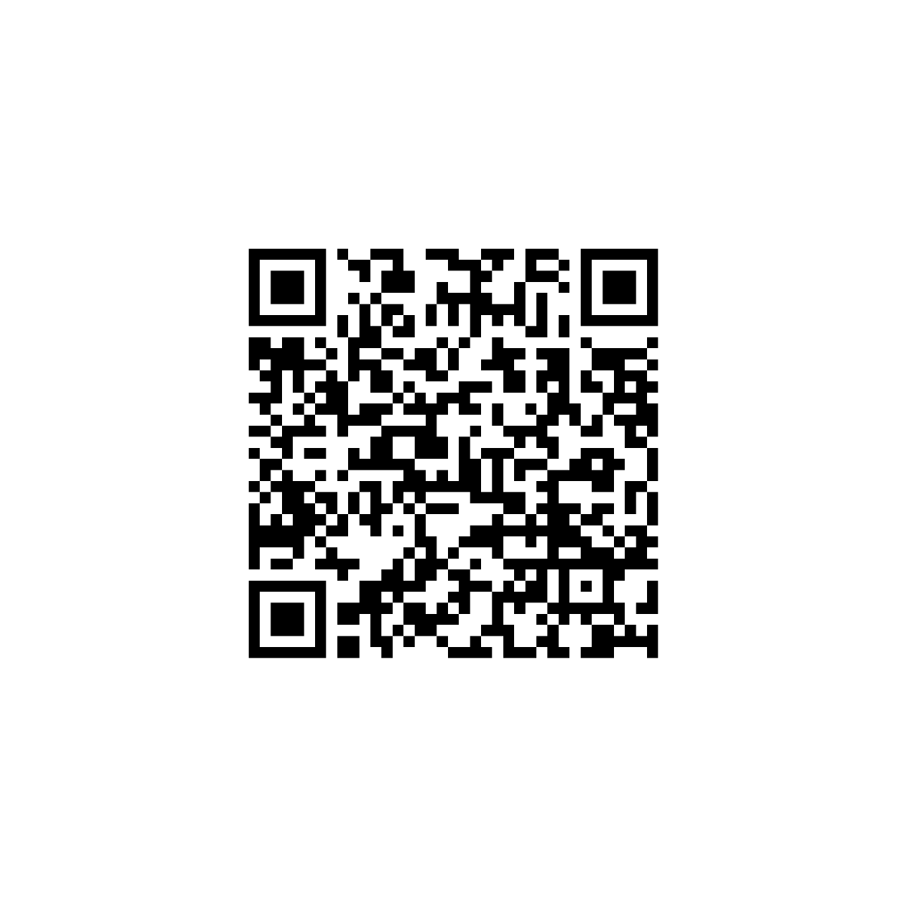

HANA JUNGJUN TECH
하나정준통신 × 여행일기
하나정준통신은 사람과 기술, 그리고 소중한 기억을 연결하는 것을 목표로 합니다. '여행일기'는 그 고민의 결과물로 탄생한 첫 번째 발자취입니다.
여행을 너무 좋아해서 '나만 보려고' 만들기 시작했던 앱이 여기까지 왔습니다. 밤마다 서버랑 싸우고, 남극 지도가 빨갛게 변하는 걸 보며 당황하기도 하지만 형님들의 응원 덕분에 즐겁게 개발하고 있습니다.
보내주시는 따뜻한 마음은 서버 운영과 개발자의 야식비로 사용되어, 앱이 멈추지 않고 발전하는 데 큰 힘이 됩니다.
👇 토스 앱으로 스캔하여 응원하기 👇
